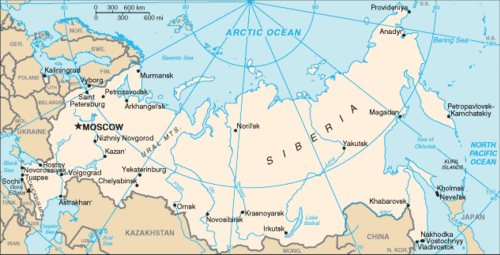
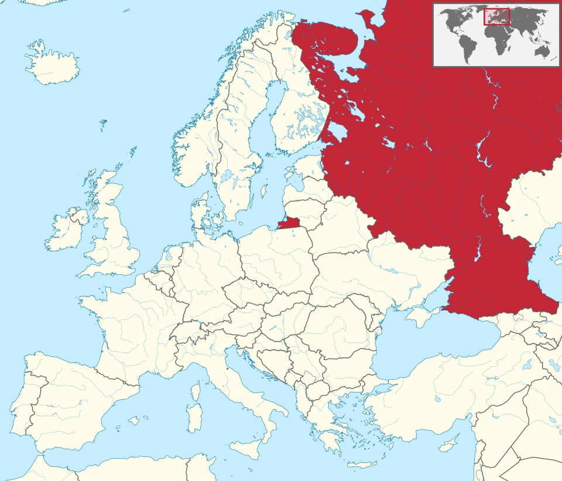
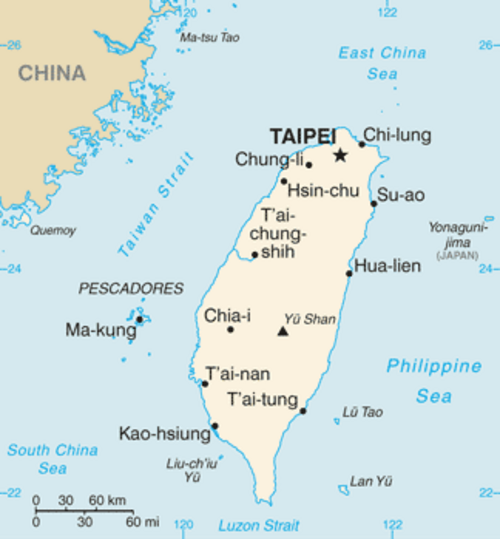
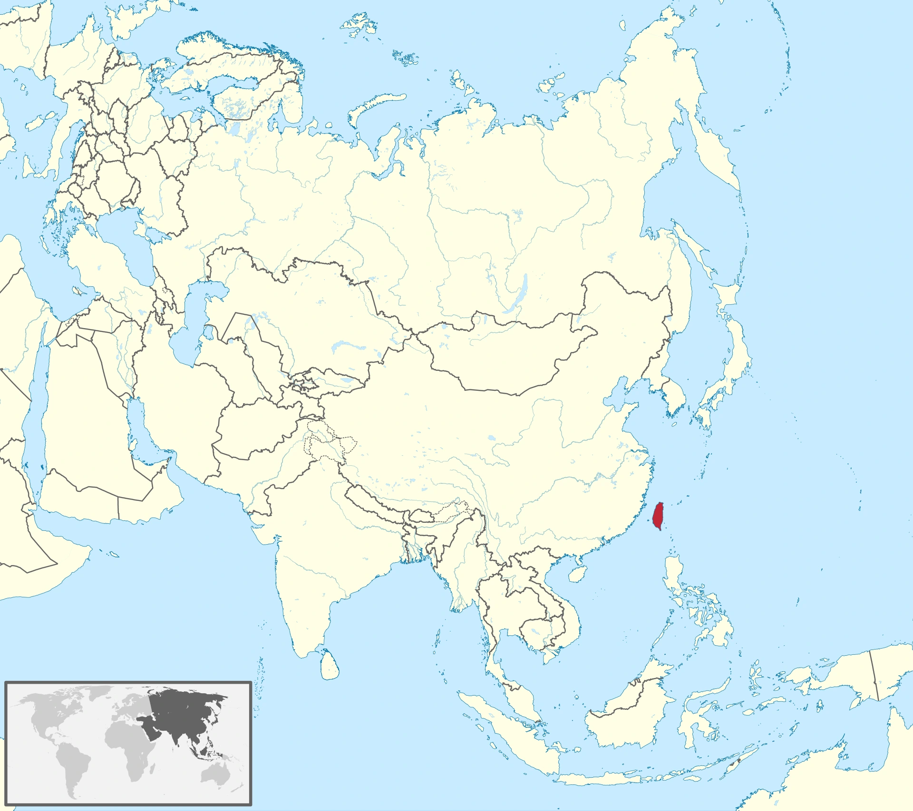

亚洲国家与首都
地图记忆手册
先找到国家，再记住首都。
目标：不是“看过”，而是能真正背下来。
版本：2026-10 · 地图增补：2026-10-03
主表口径：联合国统计司 UN M49 的亚洲分区。按这一口径，亚洲主表包含 48 个国家/国家实体；俄罗斯被列入欧洲，因此放在文末“扩展题库”。
图文版怎么用
本次为 48 个主条目＋3 个扩展条目逐一加入两张网上查找的地图，共 102 张。原有口诀、速查表与自测题保留。
- 先看亚洲位置图：找到红色或其他突出着色的国家；小国可能用圆圈提示。
- 再看国家地图：辨认轮廓、邻国、岛屿与海岸；有城市标注的图可对照标题中的英文首都名。
- 读一句位置提示，把“分区 → 国家位置 → 首都方位”串起来，再遮住标题回忆首都。
地图随本站一起托管，滚动到相应条目时加载；点击地图可放大。可下载 Markdown 或在 GitHub 仓库中查看全部地图与来源。
读图口径：底图来自不同年份，英文、旧地名或首都标识可能与现代资料不同；本手册在容易混淆的条目旁加了说明。地图用于位置记忆，边界与争议区域沿用原图绘法；国家分区继续采用原手册的 UN M49 口径。逐图来源、作者和许可列在文末，不把图片制作年份当作首都资料的核查日期。
0. 先说怎么背：不要一次背 48 个
最有效的办法不是按字母顺序硬背，而是把亚洲拆成 5 个地理块：
- 东亚：5 个
- 东南亚：11 个
- 南亚：9 个
- 中亚：5 个
- 西亚：18 个
合起来：
5 + 11 + 9 + 5 + 18 = 48
这 48 个条目中包含 巴勒斯坦国（State of Palestine）。
联合国 M49 还会列出香港、澳门等“country or area”统计条目，但它们不是国家，因此不放进本手册的国家首都主表。
不同教材对俄罗斯、台湾、埃及等边缘或跨洲情况的处理可能不同，所以本手册把这些放到文末“扩展题库”。
核心目标不是争论“亚洲到底多少国”，而是：
你看到一个亚洲国家，就能立刻说出首都。
1. 一页速查表
东亚
| 国家 | English | 首都 | English |
|---|---|---|---|
| 中国 | China | 北京 | Beijing |
| 日本 | Japan | 东京 | Tokyo |
| 韩国 | South Korea | 首尔 | Seoul |
| 朝鲜 | North Korea | 平壤 | Pyongyang |
| 蒙古 | Mongolia | 乌兰巴托 | Ulaanbaatar |
东南亚
| 国家 | English | 首都 | English |
|---|---|---|---|
| 越南 | Vietnam | 河内 | Hanoi |
| 老挝 | Laos | 万象 | Vientiane |
| 柬埔寨 | Cambodia | 金边 | Phnom Penh |
| 泰国 | Thailand | 曼谷 | Bangkok |
| 缅甸 | Myanmar | 内比都 | Nay Pyi Taw |
| 马来西亚 | Malaysia | 吉隆坡 | Kuala Lumpur |
| 新加坡 | Singapore | 新加坡 | Singapore |
| 印度尼西亚 | Indonesia | 雅加达* | Jakarta |
| 菲律宾 | Philippines | 马尼拉 | Manila |
| 文莱 | Brunei | 斯里巴加湾市 | Bandar Seri Begawan |
| 东帝汶 | Timor-Leste | 帝力 | Dili |
* 截至 2026 年，法律上的迁都程序仍在过渡中，雅加达仍是实际背诵时应答的首都；努山塔拉（Nusantara）正在建设，官方目标是 2028 年成为政治首都。
南亚
| 国家 | English | 首都 | English |
|---|---|---|---|
| 阿富汗 | Afghanistan | 喀布尔 | Kabul |
| 巴基斯坦 | Pakistan | 伊斯兰堡 | Islamabad |
| 印度 | India | 新德里 | New Delhi |
| 尼泊尔 | Nepal | 加德满都 | Kathmandu |
| 不丹 | Bhutan | 廷布 | Thimphu |
| 孟加拉国 | Bangladesh | 达卡 | Dhaka |
| 斯里兰卡 | Sri Lanka | 斯里贾亚瓦德纳普拉科特* | Sri Jayawardenepura Kotte |
| 马尔代夫 | Maldives | 马累 | Malé |
| 伊朗 | Iran | 德黑兰 | Tehran |
* 科伦坡是最大城市和商业中心，但官方行政首都为斯里贾亚瓦德纳普拉科特。
中亚
| 国家 | English | 首都 | English |
|---|---|---|---|
| 哈萨克斯坦 | Kazakhstan | 阿斯塔纳 | Astana |
| 吉尔吉斯斯坦 | Kyrgyzstan | 比什凯克 | Bishkek |
| 塔吉克斯坦 | Tajikistan | 杜尚别 | Dushanbe |
| 土库曼斯坦 | Turkmenistan | 阿什哈巴德 | Ashgabat |
| 乌兹别克斯坦 | Uzbekistan | 塔什干 | Tashkent |
西亚
| 国家 | English | 首都 | English |
|---|---|---|---|
| 土耳其 | Türkiye | 安卡拉 | Ankara |
| 塞浦路斯 | Cyprus | 尼科西亚 | Nicosia |
| 格鲁吉亚 | Georgia | 第比利斯 | Tbilisi |
| 亚美尼亚 | Armenia | 埃里温 | Yerevan |
| 阿塞拜疆 | Azerbaijan | 巴库 | Baku |
| 伊拉克 | Iraq | 巴格达 | Baghdad |
| 叙利亚 | Syria | 大马士革 | Damascus |
| 黎巴嫩 | Lebanon | 贝鲁特 | Beirut |
| 约旦 | Jordan | 安曼 | Amman |
| 以色列 | Israel | 耶路撒冷* | Jerusalem |
| 巴勒斯坦国 | State of Palestine | 东耶路撒冷* | East Jerusalem |
| 沙特阿拉伯 | Saudi Arabia | 利雅得 | Riyadh |
| 也门 | Yemen | 萨那 | Sana'a |
| 阿曼 | Oman | 马斯喀特 | Muscat |
| 阿联酋 | United Arab Emirates | 阿布扎比 | Abu Dhabi |
| 卡塔尔 | Qatar | 多哈 | Doha |
| 巴林 | Bahrain | 麦纳麦 | Manama |
| 科威特 | Kuwait | 科威特城 | Kuwait City |
* 耶路撒冷的地位存在国际争议。联合国 UNData 对以色列记录为 Jerusalem，并注明该称谓由以色列提供；对巴勒斯坦国记录为 East Jerusalem，并注明该称谓由巴勒斯坦国提供，同时指出联合国对耶路撒冷地位有单独立场。为了背诵，不要把这两个条目“合并掉”。
2. 东亚：最好背的一组
🇨🇳 中国 — 北京 Beijing
位置提示｜东亚：东亚大陆东部；北京在华北，靠近渤海。
| 国家地图：看轮廓与局部位置 | 亚洲位置图：看全洲方位 |
|---|---|
 |
 |

_(de-facto)_(-mini_map).svg){kind=link}
国家印象：东亚大陆核心国家。
首都记忆：“北京”本身就是“北方的京城”。
有趣点：
- “北京 / 南京 / 东京”其实非常适合一起记：
- 北京 = Northern Capital
- 南京 = Southern Capital
- 东京 = Eastern Capital
- 明成祖时期，明朝政治中心逐渐北移，北京在 15 世纪成为帝国首都。
记忆钩子：
中国往北看：北京。
🇯🇵 日本 — 东京 Tokyo
位置提示｜东亚：亚洲东岸外海的弧形群岛；东京在本州岛东部。
| 国家地图：看轮廓与局部位置 | 亚洲位置图：看全洲方位 |
|---|---|
 |
 |

_(de-facto)_(-mini_map).svg){kind=link}
国家印象：东亚岛国。
首都记忆：“东京”就是“东方的京城”。
有趣点：
- 东京过去叫 江户（Edo）。
- 1868 年明治维新后，江户改称东京。
- 所以“东京”这个名字本身就已经在告诉你：这是“东边的首都”。
记忆钩子：
日本在中国东边 → 东京。
🇰🇷 韩国 — 首尔 Seoul
位置提示｜东亚：朝鲜半岛南部；首尔在西北部，靠近半岛分界线。
| 国家地图：看轮廓与局部位置 | 亚洲位置图：看全洲方位 |
|---|---|
 |
 |
.png){kind=link}
_(-mini_map).svg){kind=link}
国家印象：朝鲜半岛南部。
首都记忆：首尔和“首”字非常搭。
有趣点：
- 朝鲜王朝时期，这座城市长期叫 汉阳 / 汉城（Hanyang / Hanseong）。
- 现代名称 Seoul 与韩语中“首都、京城”的概念有关。
- 汉江穿过整个首尔，是城市空间结构的重要轴线。
记忆钩子：
韩国的“首”都 = 首尔。
🇰🇵 朝鲜 — 平壤 Pyongyang
位置提示｜东亚：朝鲜半岛北部；平壤在西部、大同江畔。
| 国家地图：看轮廓与局部位置 | 亚洲位置图：看全洲方位 |
|---|---|
 |
 |
.png){kind=link}
_(-mini_map).svg){kind=link}
国家印象：朝鲜半岛北部。
首都记忆：“朝鲜—平壤”是固定搭配，直接成对背。
有趣点：
- 平壤是一座非常古老的城市。
- 高句丽时期它就曾是重要政治中心。
- 中文名“平壤”很有辨识度，可以直接和“首尔”形成南北对照。
记忆钩子：
半岛北：平壤；半岛南：首尔。
🇲🇳 蒙古 — 乌兰巴托 Ulaanbaatar
位置提示｜东亚：中国以北、俄罗斯以南的内陆国；乌兰巴托在中北部。
| 国家地图：看轮廓与局部位置 | 亚洲位置图：看全洲方位 |
|---|---|
 |
 |

_(-mini_map).svg){kind=link}
国家印象：中国和俄罗斯之间的高原内陆国。
首都记忆：这是东亚最容易拼写错、但故事最好记的首都之一。
有趣点：
- Ulaanbaatar 的蒙古语含义大致是 “红色英雄”。
- 1924 年城市改为现在的名称。
- 早期这座城市甚至不是固定地点，而是一个多次迁移的宗教政治中心。
记忆钩子：
蒙古草原上的“红色英雄” = 乌兰巴托。
3. 东南亚：最适合用“地图路线”背
建议你按大陆从东往西、再下到岛屿：
越南 → 老挝 → 柬埔寨 → 泰国 → 缅甸
马来西亚 → 新加坡
印尼 → 菲律宾 → 文莱 → 东帝汶
🇻🇳 越南 — 河内 Hanoi
位置提示｜东南亚：中南半岛东侧的狭长国家；河内在北部红河三角洲。
| 国家地图：看轮廓与局部位置 | 亚洲位置图：看全洲方位 |
|---|---|
 |
 |

_(-mini_map).svg){kind=link}
国家印象：狭长的“S 形”国家。
首都记忆：越南北部是河内，南部大城市是胡志明市。
有趣点：
- “河内”的字面意思就是 “河流之内”。
- 1010 年，李朝把都城迁到这里附近，称 升龙（Thăng Long）。
- 胡志明市更大、更商业化，但它不是首都。
记忆钩子：
越南北部有“河” → 河内。
🇱🇦 老挝 — 万象 Vientiane
位置提示｜东南亚：中南半岛内陆；万象在西部湄公河边，对岸是泰国。
| 国家地图：看轮廓与局部位置 | 亚洲位置图：看全洲方位 |
|---|---|
 |
 |

_(-mini_map).svg){kind=link}
国家印象：东南亚唯一的内陆国。
首都记忆：万象就在湄公河边，对岸就是泰国。
有趣点：
- 万象位于湄公河左岸。
- 从地理上看，它和泰国东北部距离非常近。
- 老挝没有海，所以记住“首都贴着湄公河”很有效。
记忆钩子：
老挝没海，首都靠湄公河：万象。
🇰🇭 柬埔寨 — 金边 Phnom Penh
位置提示｜东南亚：泰国以东、越南以西；金边在南部河流交汇处。
| 国家地图：看轮廓与局部位置 | 亚洲位置图：看全洲方位 |
|---|---|
 |
 |

_(-mini_map).svg){kind=link}
国家印象：吴哥窟所在国。
首都记忆：“吴哥窟 ≠ 首都”，首都是金边。
有趣点：
- 金边名字与当地的 **“佩恩夫人（Lady Penh）”**传说和一座小山有关。
- Phnom 在高棉语里有“山丘”的意思。
- 吴哥是古代高棉帝国核心区域，但现代首都是金边。
记忆钩子：
看吴哥去暹粒，找首都去金边。
🇹🇭 泰国 — 曼谷 Bangkok
位置提示｜东南亚：中南半岛中部，向南延伸至马来半岛；曼谷在中南部。
| 国家地图：看轮廓与局部位置 | 亚洲位置图：看全洲方位 |
|---|---|
 |
 |

_(-mini_map).svg){kind=link}
国家印象：东南亚旅游大国。
首都记忆：曼谷几乎不会忘，但它有一个非常有趣的语言点。
有趣点：
- 泰国人日常更常称曼谷为 Krung Thep。
- 它有一个极长的传统正式名称，因此经常被拿来当“超长地名”的例子。
- 曼谷位于湄南河下游。
记忆钩子：
泰国旅行第一站：曼谷。
🇲🇲 缅甸 — 内比都 Nay Pyi Taw
位置提示｜东南亚：中南半岛西侧，邻印度、孟加拉国和中国；内比都在中部。
| 国土与首都行政区图：看轮廓与局部位置 | 亚洲位置图：看全洲方位 |
|---|---|
 |
 |
地图来源：左图 · 右图。
读图提醒：左图把内比都联邦区突出显示；这是一块首都行政区，并非城市建成区的精确轮廓。

_(-mini_map).svg){kind=link}
国家印象：东南亚大陆国家。
首都记忆：最常见陷阱是把“仰光”答成首都。
有趣点：
- 过去的首都是 仰光 Yangon。
- 2005 年政府机构开始迁往内比都，2006 年正式宣布其首都地位。
- Nay Pyi Taw 大意可理解为 “王都 / 国王的居所”。
- 城市以超宽道路和低密度布局著名。
记忆钩子：
缅甸：仰光最出名，内比都才是首都。
🇲🇾 马来西亚 — 吉隆坡 Kuala Lumpur
位置提示｜东南亚：西部在马来半岛，东部在婆罗洲北部；吉隆坡在马来半岛西侧。
| 国家地图：看轮廓与局部位置 | 亚洲位置图：看全洲方位 |
|---|---|
 |
 |

_(-mini_map).svg){kind=link}
国家印象：由马来半岛与婆罗洲北部领土组成。
首都记忆：这里有一个高频考试陷阱。
有趣点：
- 吉隆坡是国家首都。
- 布城 Putrajaya 是联邦行政中心。
- Kuala Lumpur 的名字通常解释为 “泥泞的河流汇合处”。
- 双子塔让吉隆坡成为亚洲辨识度最高的城市之一。
记忆钩子：
马来西亚：首都吉隆坡，政府办公多在布城。
🇸🇬 新加坡 — 新加坡 Singapore
位置提示｜东南亚：马来半岛最南端外海，介于马来西亚与印度尼西亚之间；国家与首都同名。
| 国家地图：看轮廓与局部位置 | 亚洲位置图：看全洲方位 |
|---|---|
 |
 |
.png){kind=link}
_(-mini_map).svg){kind=link}
国家印象：城市国家。
首都记忆：国家和首都同名。
有趣点：
- Singapore 来自梵语 Singapura，通常解释为“狮城”。
- 它是世界上少数典型的城市国家之一。
- 所以这题属于“送分题”。
记忆钩子：
新加坡国家 = 新加坡城市。
🇮🇩 印度尼西亚 — 雅加达 Jakarta（迁都进行中）
位置提示｜东南亚：赤道附近的巨大群岛，横跨苏门答腊、爪哇等岛；雅加达在爪哇岛西北岸。
| 国家地图：看轮廓与局部位置 | 亚洲位置图：看全洲方位 |
|---|---|
 |
 |
地图来源：左图 · 右图。
读图提醒：左图标出的 Jakarta 在爪哇岛；正在建设的 Nusantara 位于婆罗洲，迁都说明见正文。

_(-mini_map).svg){kind=link}
国家印象：世界最大的群岛国家之一。
首都记忆：这是 2020 年代最需要注意“版本”的一道题。
有趣点：
- 雅加达殖民时期曾长期叫 Batavia（巴达维亚）。
- 印尼正在婆罗洲加里曼丹建设新首都 Nusantara（努山塔拉）。
- 但截至 2026 年，印尼宪法法院相关判决与现行法律仍确认：在总统正式发布迁都决定前，雅加达继续保持首都地位。
- 印尼政府 2025 年规划目标是让努山塔拉在 2028 年成为政治首都。
记忆钩子：
2026 背诵答案先答雅加达；努山塔拉记作“正在接班”。
🇵🇭 菲律宾 — 马尼拉 Manila
位置提示｜东南亚：南海以东、台湾以南的群岛；马尼拉在吕宋岛西岸。
| 国家地图：看轮廓与局部位置 | 亚洲位置图：看全洲方位 |
|---|---|
 |
 |

_(-mini_map).svg){kind=link}
国家印象：由 7000 多个岛屿组成的群岛国。
首都记忆：马尼拉湾 + 马尼拉。
有趣点：
- 西班牙殖民时期修建的 **Intramuros（王城）**至今仍是马尼拉的重要历史区域。
- 马尼拉大都会是一个巨型都市区，但“首都”仍然是马尼拉市。
记忆钩子：
菲律宾最著名的海湾：马尼拉湾 → 首都马尼拉。
🇧🇳 文莱 — 斯里巴加湾市 Bandar Seri Begawan
位置提示｜东南亚：婆罗洲北岸的小国，领土分为两块；斯里巴加湾市在较大的西部领土内。
| 国家地图：看轮廓与局部位置 | 亚洲位置图：看全洲方位 |
|---|---|
 |
 |

_(-mini_map).svg){kind=link}
国家印象：婆罗洲北岸的小型君主国，石油天然气资源丰富。
首都记忆：名字很长，最适合拆开记。
有趣点：
- Bandar 大致是“城市/港口”。
- 1970 年，首都改名为 Bandar Seri Begawan，以纪念苏丹奥马尔·阿里·赛福鼎三世。
- 城中最著名的地标之一就是奥马尔·阿里·赛福鼎清真寺。
记忆钩子：
文莱的“超长首都名”：斯里巴加湾市。
🇹🇱 东帝汶 — 帝力 Dili
位置提示｜东南亚：帝汶岛东部，澳大利亚以北；帝力在岛的北岸。还包括欧库西飞地。
| 国家地图：看轮廓与局部位置 | 亚洲位置图：看全洲方位 |
|---|---|
 |
 |

_(-mini_map).svg){kind=link}
国家印象：帝汶岛东部国家，21 世纪才恢复独立。
首都记忆：“东帝汶—帝力”，前两个字很像。
有趣点：
- 东帝汶在 2002 年正式恢复独立。
- 葡萄牙殖民历史使葡萄牙语至今仍是官方语言之一。
- 帝力位于帝汶岛北岸。
记忆钩子：
东帝汶 → 帝力：都带“帝”。
4. 南亚：围着印度背
可以把印度想成中心：
西北：阿富汗、巴基斯坦
中央：印度
北边山地：尼泊尔、不丹
东边：孟加拉国
海上：斯里兰卡、马尔代夫
西边：伊朗（UN M49 将其归入南亚）
🇦🇫 阿富汗 — 喀布尔 Kabul
位置提示｜南亚：伊朗以东、巴基斯坦西北；喀布尔在东部山间盆地。
| 国家地图：看轮廓与局部位置 | 亚洲位置图：看全洲方位 |
|---|---|
 |
 |

_(-mini_map).svg){kind=link}
国家印象：连接中亚、南亚、西亚的重要山地国家。
首都记忆：喀布尔河穿城而过。
有趣点：
- 阿富汗长期处于古代丝绸之路及东西交通网络交汇地带。
- 喀布尔周边被兴都库什山系环绕。
记忆钩子：
阿富汗山谷里的首都：喀布尔。
🇵🇰 巴基斯坦 — 伊斯兰堡 Islamabad
位置提示｜南亚：印度西北侧，南临阿拉伯海；伊斯兰堡在东北部、喜马拉雅山麓附近。
| 国家地图：看轮廓与局部位置 | 亚洲位置图：看全洲方位 |
|---|---|
 |
 |

_(de-facto)_(-mini_map).svg){kind=link}
国家印象：印度西北侧的大国。
首都记忆：不要答卡拉奇。
有趣点：
- 巴基斯坦独立后最初的首都是 卡拉奇。
- 后来修建了规划城市 伊斯兰堡作为新首都。
- “Islamabad”可理解为“伊斯兰之城”。
记忆钩子：
巴基斯坦是伊斯兰共和国 → 伊斯兰堡。
🇮🇳 印度 — 新德里 New Delhi
位置提示｜南亚：南亚次大陆主体，向南伸入印度洋；新德里在北部内陆。
| 国家地图：看轮廓与局部位置 | 亚洲位置图：看全洲方位 |
|---|---|
 |
 |

_(de-facto)_(-mini_map).svg){kind=link}
国家印象：南亚最大国家。
首都记忆：“德里”和“新德里”要区分。
有趣点：
- 1911 年，英属印度宣布将首都从加尔各答迁到德里。
- 新德里随后按规划建设，主要设计者包括 Edwin Lutyens 和 Herbert Baker。
- 今天“德里”是更大的国家首都辖区，而“新德里”是其中的国家政治核心。
记忆钩子：
印度不是孟买，也不是加尔各答，而是新德里。
🇳🇵 尼泊尔 — 加德满都 Kathmandu
位置提示｜南亚：中国与印度之间，沿喜马拉雅山南麓展开；加德满都在中部谷地。
| 国家地图：看轮廓与局部位置 | 亚洲位置图：看全洲方位 |
|---|---|
 |
 |

_(-mini_map).svg){kind=link}
国家印象：喜马拉雅山国家，珠穆朗玛峰位于尼泊尔与中国边境。
首都记忆：珠峰国家 → 加德满都谷地。
有趣点：
- 加德满都谷地长期是尼泊尔文明核心。
- 这里保存大量寺庙、宫殿与传统城市广场。
记忆钩子：
登珠峰先想到尼泊尔，再想到加德满都。
🇧🇹 不丹 — 廷布 Thimphu
位置提示｜南亚：喜马拉雅山南麓、中国与印度之间，位于尼泊尔以东；廷布在西部。
| 国家地图：看轮廓与局部位置 | 亚洲位置图：看全洲方位 |
|---|---|
 |
 |

_(-mini_map).svg){kind=link}
国家印象：喜马拉雅山中的小型王国。
首都记忆：两个字，廷布。
有趣点：
- 廷布是世界上海拔较高的国家首都之一。
- 不丹政府与国王办公的重要建筑 **扎西却宗（Tashichho Dzong）**就在廷布。
记忆钩子：
不丹很小，首都名字也短：廷布。
🇧🇩 孟加拉国 — 达卡 Dhaka
位置提示｜南亚：印度东北侧、孟加拉湾北岸；达卡在中部河网平原。
| 国家地图：看轮廓与局部位置 | 亚洲位置图：看全洲方位 |
|---|---|
 |
 |

_(-mini_map).svg){kind=link}
国家印象：恒河—布拉马普特拉河三角洲上的人口大国。
首都记忆：孟加拉国 = 达卡，孟买不在孟加拉国。
有趣点：
- 达卡历史上以精细的 孟加拉薄纱 muslin闻名。
- 这座城市今天是全球人口最密集的大都市之一。
记忆钩子：
孟加拉不是“孟买”；首都是达卡。
🇱🇰 斯里兰卡 — 斯里贾亚瓦德纳普拉科特 Sri Jayawardenepura Kotte
位置提示｜南亚：印度东南端外海的岛国；科特在西部，紧邻科伦坡。
| 国家地图：看轮廓与局部位置 | 亚洲位置图：看全洲方位 |
|---|---|
 |
 |
地图来源：左图 · 右图。
读图提醒：左图同时标出 Colombo（科伦坡）与 Sri Jayawardenepura Kotte（科特）。两者相邻；背本手册的首都答案时记科特。

_(-mini_map).svg){kind=link}
国家印象：印度南方印度洋上的岛国。
首都记忆：亚洲首都题里的“大 Boss”。
有趣点：
- 很多人会回答 科伦坡 Colombo。
- 但斯里兰卡政府资料将 Sri Jayawardenepura Kotte列为行政首都；科伦坡是商业首都和最大城市。
- 这座城市简称 **Kotte（科特）**会容易很多。
- 1980 年代，议会迁入科特的新议会大楼。
记忆钩子：
斯里兰卡：科伦坡最有名，科特才是首都。
如果完整名字太难，可以分块：
Sri | Jayawardenepura | Kotte
斯里 | 贾亚瓦德纳普拉 | 科特
🇲🇻 马尔代夫 — 马累 Malé
位置提示｜南亚：印度和斯里兰卡西南方的印度洋环礁群；马累在群岛中北部。
| 国家地图：看轮廓与局部位置 | 亚洲位置图：看全洲方位 |
|---|---|
 |
 |

_(-mini_map).svg){kind=link}
国家印象：印度洋岛国。
首都记忆：国家很散，首都很挤。
有趣点：
- 马尔代夫由大量珊瑚岛组成。
- 首都马累所在岛面积很小，却高度城市化。
- 国际机场主要位于旁边的 Hulhulé 岛。
记忆钩子：
马尔代夫 → 马累：前两个字都是“马”。
🇮🇷 伊朗 — 德黑兰 Tehran
位置提示｜南亚：西亚与南亚之间，北邻里海、南临波斯湾与阿曼湾；德黑兰在北部山麓。M49 归南亚。
| 国家地图：看轮廓与局部位置 | 亚洲位置图：看全洲方位 |
|---|---|
 |
 |

_(-mini_map).svg){kind=link}
国家印象：伊朗高原上的区域大国。
首都记忆：波斯文明很古老，但德黑兰成为首都相对较晚。
有趣点：
- 德黑兰直到 18 世纪末卡扎尔王朝时期才成为国家首都。
- 城市北侧就是厄尔布尔士山脉，天气好时城市背景可直接看到雪山。
记忆钩子：
伊朗现代政治中心：德黑兰。
5. 中亚：“五个斯坦”一起拿下
中亚五国全部以 **-stan（斯坦）**结尾：
哈萨克斯坦 — 阿斯塔纳
吉尔吉斯斯坦 — 比什凯克
塔吉克斯坦 — 杜尚别
土库曼斯坦 — 阿什哈巴德
乌兹别克斯坦 — 塔什干
可以背成一句节奏：
哈阿、吉比、塔杜、土阿、乌塔
🇰🇿 哈萨克斯坦 — 阿斯塔纳 Astana
位置提示｜中亚：中亚北部，俄罗斯以南、中国以西；阿斯塔纳在北部内陆。
| 国家地图：看轮廓与局部位置 | 亚洲位置图：看全洲方位 |
|---|---|
 |
 |

_(-mini_map).svg){kind=link}
有趣点：
- Astana 在哈萨克语中本身就有 **“首都”**的含义。
- 这座城市曾先后叫 Akmola、Astana、Nur-Sultan，2022 年又改回 Astana。
- 所以这是一个“名字反复横跳”的首都。
记忆钩子：
哈萨克的首都就叫“首都”：Astana。
🇰🇬 吉尔吉斯斯坦 — 比什凯克 Bishkek
位置提示｜中亚：中亚东部山地，中国以西、哈萨克斯坦以南；比什凯克在北部。
| 国家地图：看轮廓与局部位置 | 亚洲位置图：看全洲方位 |
|---|---|
 |
 |

_(-mini_map).svg){kind=link}
有趣点：
- 苏联时期，这座城市曾叫 Frunze（伏龙芝）。
- 1991 年吉尔吉斯斯坦独立前后恢复为 Bishkek。
记忆钩子：
吉尔吉斯 → 比什凯克。
两个词都很“拗口”，捆绑记。
🇹🇯 塔吉克斯坦 — 杜尚别 Dushanbe
位置提示｜中亚：中亚东南部、阿富汗以北；杜尚别在西部山间。
| 国家地图：看轮廓与局部位置 | 亚洲位置图：看全洲方位 |
|---|---|
 |
 |

_(-mini_map).svg){kind=link}
这是中亚最好玩的一个。
Dushanbe 在塔吉克语/波斯语里就是“星期一”。
原因与当地过去的 星期一集市有关，城市由集市聚落逐渐发展。
记忆钩子：
周一去哪？去塔吉克斯坦的杜尚别。
🇹🇲 土库曼斯坦 — 阿什哈巴德 Ashgabat
位置提示｜中亚：里海东岸、伊朗以北；阿什哈巴德在南部，靠近伊朗边境。
| 国家地图：看轮廓与局部位置 | 亚洲位置图：看全洲方位 |
|---|---|
 |
 |

_(-mini_map).svg){kind=link}
有趣点：
- 阿什哈巴德在 1948 年遭遇毁灭性大地震，之后大规模重建。
- 今天城市以大量白色大理石建筑闻名。
记忆钩子：
土库曼的白色城市：阿什哈巴德。
🇺🇿 乌兹别克斯坦 — 塔什干 Tashkent
位置提示｜中亚：中亚中部的双重内陆国；塔什干在东北部，靠近哈萨克斯坦。
| 国家地图：看轮廓与局部位置 | 亚洲位置图：看全洲方位 |
|---|---|
 |
 |

_(-mini_map).svg){kind=link}
有趣点：
- 乌兹别克斯坦最著名的丝路古城可能是撒马尔罕和布哈拉。
- 但首都是 塔什干。
- 1966 年的大地震之后，塔什干经历了大规模重建。
记忆钩子：
撒马尔罕最有名，塔什干才是首都。
6. 西亚：陷阱最多的一组
西亚建议分 4 小组：
高加索
亚美尼亚—埃里温
阿塞拜疆—巴库
格鲁吉亚—第比利斯
两河与地中海
伊拉克—巴格达
叙利亚—大马士革
黎巴嫩—贝鲁特
约旦—安曼
以色列—耶路撒冷
巴勒斯坦国—东耶路撒冷
阿拉伯半岛
沙特—利雅得
也门—萨那
阿曼—马斯喀特
阿联酋—阿布扎比
卡塔尔—多哈
巴林—麦纳麦
科威特—科威特城
另外两个
土耳其—安卡拉
塞浦路斯—尼科西亚
🇦🇲 亚美尼亚 — 埃里温 Yerevan
位置提示｜西亚：南高加索内陆，土耳其以东；埃里温在西部。
| 国家地图：看轮廓与局部位置 | 亚洲位置图：看全洲方位 |
|---|---|
 |
 |
_(-mini_map).svg){kind=link}
有趣点：
- 埃里温的历史与古代 Erebuni Fortress密切相关。
- Erebuni 要塞建于公元前 782 年，是研究城市起源的重要节点。
记忆钩子：
亚美尼亚最古老的城市记忆：Erebuni → Yerevan。
🇦🇿 阿塞拜疆 — 巴库 Baku
位置提示｜西亚：南高加索、里海西岸；巴库在东部阿布歇隆半岛。另有纳希切万飞地。
| 国家地图：看轮廓与局部位置 | 亚洲位置图：看全洲方位 |
|---|---|
 |
 |

_(-mini_map).svg){kind=link}
有趣点：
- 巴库位于里海西岸。
- 城市海拔低于海平面，是世界上海拔最低的国家首都之一。
- 阿塞拜疆与石油工业历史关系极深，19 世纪末巴库就是世界重要石油城市。
记忆钩子：
里海边的石油城：巴库。
🇬🇪 格鲁吉亚 — 第比利斯 Tbilisi
位置提示｜西亚：高加索山脉南侧、黑海东岸；第比利斯在东南部。
| 国家地图：看轮廓与局部位置 | 亚洲位置图：看全洲方位 |
|---|---|
 |
 |


有趣点：
- “Tbilisi”与格鲁吉亚语中的“温暖”有关。
- 当地著名建城传说也和 温泉有关。
- 今天老城区仍能看到硫磺浴场。
记忆钩子：
格鲁吉亚泡温泉 → 第比利斯。
🇮🇶 伊拉克 — 巴格达 Baghdad
位置提示｜西亚：伊朗以西、两河流域；巴格达在中部底格里斯河畔。
| 国家地图：看轮廓与局部位置 | 亚洲位置图：看全洲方位 |
|---|---|
 |
 |

_(-mini_map).svg){kind=link}
有趣点：
- 巴格达于公元 762 年由阿拔斯王朝哈里发曼苏尔建立为新都。
- 早期城市核心以著名的 **“圆城”**布局闻名。
- 中世纪巴格达曾是伊斯兰世界最重要的知识中心之一。
记忆钩子：
两河文明后来的一大中心：巴格达。
🇸🇾 叙利亚 — 大马士革 Damascus
位置提示｜西亚：地中海东侧、土耳其以南；大马士革在西南部内陆。
| 国家地图：看轮廓与局部位置 | 亚洲位置图：看全洲方位 |
|---|---|
 |
 |

_(claimed)_(-mini_map).svg){kind=link}
有趣点：
- 大马士革通常被认为是世界上持续有人居住时间最长的城市之一。
- 倭马亚清真寺是这座城市最重要的历史建筑之一。
记忆钩子：
叙利亚的古都：大马士革。
🇱🇧 黎巴嫩 — 贝鲁特 Beirut
位置提示｜西亚：地中海东岸的狭长小国；贝鲁特在中部海岸。
| 国家地图：看轮廓与局部位置 | 亚洲位置图：看全洲方位 |
|---|---|
 |
 |

_(-mini_map).svg){kind=link}
有趣点：
- 贝鲁特位于地中海东岸。
- 这里自古就是重要港口和商业中心。
- 城市经历过多次毁坏与重建，因此历史层非常复杂。
记忆钩子：
黎巴嫩面向地中海 → 港口首都贝鲁特。
🇯🇴 约旦 — 安曼 Amman
位置提示｜西亚：以色列和巴勒斯坦以东、沙特以北；安曼在西北部。
| 国家地图：看轮廓与局部位置 | 亚洲位置图：看全洲方位 |
|---|---|
 |
 |

_(-mini_map).svg){kind=link}
有趣点：
- 古典时代，这座城市曾叫 Philadelphia。
- 安曼城堡山和罗马剧场仍保存着大量古代遗迹。
- 城市最初在山丘间发展，因此老城区高低起伏明显。
记忆钩子：
约旦看佩特拉，首都却是安曼。
🇮🇱 以色列 — 耶路撒冷 Jerusalem
位置提示｜西亚：地中海东岸；耶路撒冷位于内陆山地，其地位有国际争议。
| 国家地图：看轮廓与局部位置 | 亚洲位置图：看全洲方位 |
|---|---|
 |
 |
地图来源：左图 · 右图。
读图提醒：左图为国土与周边轮廓图，未标城市。耶路撒冷地位的说明见本条正文。

_(wo_occupied_territory)_(-mini_map).svg){kind=link}
有趣点：
- 以色列将耶路撒冷作为首都和主要国家机构所在地。
- 耶路撒冷对犹太教、基督教和伊斯兰教都具有重大宗教意义。
- 但耶路撒冷的国际法律与外交地位长期存在争议，因此不同资料的表述会带有说明。
背诵策略：
地理题：以色列 → 耶路撒冷。
看到严谨资料时，记得“耶路撒冷地位有争议”。
🇵🇸 巴勒斯坦国 — 东耶路撒冷 East Jerusalem
位置提示｜西亚：位于西亚，相关地域包括约旦河西岸和加沙地带，两者不相连；主张首都为东耶路撒冷。
| 国家地图：看轮廓与局部位置 | 亚洲位置图：看全洲方位 |
|---|---|
 |
 |
地图来源：左图 · 右图。
读图提醒：左图为约旦河西岸与加沙地带轮廓图，未标城市；注意这两块地域并不相连。

_(-mini_map).svg){kind=link}
联合国 UNData 的写法是：
Capital city: East Jerusalem
并明确注明：该称谓由巴勒斯坦国提供，同时联合国对耶路撒冷地位另有相关决议与立场。
现实行政运作中，拉姆安拉 Ramallah是巴勒斯坦权力机构的重要行政中心。
记忆钩子：
巴勒斯坦国：首都主张东耶路撒冷，日常行政常想到拉姆安拉。
🇸🇦 沙特阿拉伯 — 利雅得 Riyadh
位置提示｜西亚：阿拉伯半岛主体，西临红海、东临波斯湾；利雅得在中部内陆。
| 国家地图：看轮廓与局部位置 | 亚洲位置图：看全洲方位 |
|---|---|
 |
 |

_(-mini_map).svg){kind=link}
有趣点：
- Riyadh 来自阿拉伯语中与“花园、绿地”有关的词根。
- 这听起来和沙漠国家反差很大，因此很好记。
- 利雅得位于阿拉伯半岛内陆。
记忆钩子：
沙漠里的“花园”：利雅得。
🇾🇪 也门 — 萨那 Sana'a
位置提示｜西亚：阿拉伯半岛西南角，临红海与亚丁湾；萨那在西部高地。
| 国家地图：看轮廓与局部位置 | 亚洲位置图：看全洲方位 |
|---|---|
 |
 |

_(-mini_map).svg){kind=link}
有趣点：
- 萨那老城拥有极具辨识度的多层塔楼式传统民居。
- 老城被列入联合国教科文组织世界遗产名录。
- 由于也门长期冲突，政府实际驻地与行政运作较复杂；背诵国家首都时仍通常答 萨那。
记忆钩子：
也门老城高楼：萨那。
🇴🇲 阿曼 — 马斯喀特 Muscat
位置提示｜西亚：阿拉伯半岛东南角；马斯喀特在东北岸。北部另有穆桑代姆飞地。
| 国家地图：看轮廓与局部位置 | 亚洲位置图：看全洲方位 |
|---|---|
 |
 |

_(-mini_map).svg){kind=link}
有趣点：
- 马斯喀特是印度洋—波斯湾航路上的重要港口。
- 葡萄牙势力曾在 16—17 世纪控制这里的重要港口和堡垒。
- 今天仍可看到沿海山地、港湾与堡垒组合的独特城市景观。
记忆钩子：
阿曼出海 → 港口马斯喀特。
🇦🇪 阿联酋 — 阿布扎比 Abu Dhabi
位置提示｜西亚：阿拉伯半岛东侧、波斯湾南岸；阿布扎比在西部海岸。
| 国家地图：看轮廓与局部位置 | 亚洲位置图：看全洲方位 |
|---|---|
 |
 |

_(-mini_map).svg){kind=link}
最常见陷阱：迪拜不是首都。
有趣点：
- 阿布扎比既是阿联酋首都，也是阿布扎比酋长国首府。
- Dubai 更有国际知名度，但国家政治首都是 Abu Dhabi。
记忆钩子：
去旅游想到迪拜；问首都答阿布扎比。
🇶🇦 卡塔尔 — 多哈 Doha
位置提示｜西亚：伸入波斯湾的小半岛，与沙特接壤；多哈在东岸。
| 国家地图：看轮廓与局部位置 | 亚洲位置图：看全洲方位 |
|---|---|
 |
 |

_(-mini_map).svg){kind=link}
有趣点：
- 多哈位于波斯湾沿岸。
- 在石油天然气繁荣之前，当地经济与珍珠采集、海上贸易关系密切。
- 2022 年世界杯大量比赛场馆位于多哈都会区。
记忆钩子：
卡塔尔世界杯 → 多哈。
🇧🇭 巴林 — 麦纳麦 Manama
位置提示｜西亚：波斯湾内、沙特东岸外海的岛国；麦纳麦在主岛东北部。
| 国家地图：看轮廓与局部位置 | 亚洲位置图：看全洲方位 |
|---|---|
 |
 |
_(-mini_map).svg){kind=link}
有趣点：
- 巴林是波斯湾岛国。
- 麦纳麦位于巴林主岛东北部，是国家金融与商业中心。
- 名字很特别，适合直接成对背。
记忆钩子：
巴林—麦纳麦，四字押节奏。
🇰🇼 科威特 — 科威特城 Kuwait City
位置提示｜西亚：波斯湾西北端、伊拉克以南；科威特城在科威特湾南岸。
| 国家地图：看轮廓与局部位置 | 亚洲位置图：看全洲方位 |
|---|---|
 |
 |

_(-mini_map).svg){kind=link}
这也是送分题：
国家 Kuwait
首都 Kuwait City
有趣点：
- 城市位于科威特湾南岸。
- “国家名 + City”就是首都名。
记忆钩子：
科威特 → 科威特城。
🇹🇷 土耳其 — 安卡拉 Ankara
位置提示｜西亚：横跨欧亚，亚洲主体是安纳托利亚半岛；安卡拉在亚洲部分的内陆。
| 国家地图：看轮廓与局部位置 | 亚洲位置图：看全洲方位 |
|---|---|
 |
 |

_(-mini_map).svg){kind=link}
这是亚洲首都题最高频陷阱之一：
伊斯坦布尔不是首都。
有趣点：
- 奥斯曼帝国时代的政治中心长期是君士坦丁堡/伊斯坦布尔。
- 土耳其共和国成立后，1923 年将 安卡拉定为首都。
- 安卡拉位于安纳托利亚内陆，更接近土耳其地理中心。
记忆钩子：
土耳其最大最有名：伊斯坦布尔。
土耳其首都：安卡拉。
🇨🇾 塞浦路斯 — 尼科西亚 Nicosia
位置提示｜西亚：地中海东部、土耳其以南的岛国；尼科西亚在岛中央。M49 归西亚。
| 国家地图：看轮廓与局部位置 | 亚洲位置图：看全洲方位 |
|---|---|
 |
 |

_(claimed)_(-mini_map).svg){kind=link}
有趣点：
- 尼科西亚位于塞浦路斯岛中央，而不是海岸。
- 老城保存着威尼斯时代修筑的星形城墙。
- 城市的现代政治分隔也使它在欧洲—西亚地理讨论中经常出现。
记忆钩子：
塞浦路斯岛中央：尼科西亚。
7. 十大“最容易答错”的首都
按优先级背这 10 个：
| 国家 | 容易错答 | 正确答案 |
|---|---|---|
| 土耳其 | 伊斯坦布尔 | 安卡拉 |
| 澳大利亚（非亚洲，顺便提醒） | 悉尼 | 堪培拉 |
| 缅甸 | 仰光 | 内比都 |
| 斯里兰卡 | 科伦坡 | 斯里贾亚瓦德纳普拉科特 |
| 马来西亚 | 布城 | 吉隆坡 |
| 阿联酋 | 迪拜 | 阿布扎比 |
| 巴基斯坦 | 卡拉奇 | 伊斯兰堡 |
| 印度 | 孟买 | 新德里 |
| 越南 | 胡志明市 | 河内 |
| 哈萨克斯坦 | 努尔苏丹 | 阿斯塔纳 |
再加一个时代变化题：
印尼：2026 年背雅加达，同时知道努山塔拉正在接班。
8. 超级记忆法：把首都串成旅行路线
东亚旅行
北京 → 首尔 → 平壤 → 东京 → 乌兰巴托
想象：
我从 北京坐飞机去首尔，误入平壤，再飞到东京，最后骑马去了乌兰巴托。
中亚五斯坦
直接念节奏：
哈阿、吉比、塔杜、土阿、乌塔
展开：
哈萨克—阿斯塔纳
吉尔吉斯—比什凯克
塔吉克—杜尚别
土库曼—阿什哈巴德
乌兹别克—塔什干
每天念 5 遍，很快就会形成机械记忆。
阿拉伯半岛
从大国沙特开始顺时针想：
沙特—利雅得
也门—萨那
阿曼—马斯喀特
阿联酋—阿布扎比
卡塔尔—多哈
巴林—麦纳麦
科威特—科威特城
9. 反向自测
不要只做“国家 → 首都”，还要做“首都 → 国家”。
- 阿斯塔纳 → ?
- 杜尚别 → ?
- 第比利斯 → ?
- 马斯喀特 → ?
- 万象 → ?
- 内比都 → ?
- 帝力 → ?
- 廷布 → ?
- 麦纳麦 → ?
- 斯里贾亚瓦德纳普拉科特 → ?
- 利雅得 → ?
- 比什凯克 → ?
- 巴库 → ?
- 安卡拉 → ?
- 阿布扎比 → ?
点击查看答案
- 哈萨克斯坦
- 塔吉克斯坦
- 格鲁吉亚
- 阿曼
- 老挝
- 缅甸
- 东帝汶
- 不丹
- 巴林
- 斯里兰卡
- 沙特阿拉伯
- 吉尔吉斯斯坦
- 阿塞拜疆
- 土耳其
- 阿联酋
10. 国家 → 首都填空训练
建议复制下面一份，每天闭卷填一次。
中国 —
日本 —
韩国 —
朝鲜 —
蒙古 —
越南 —
老挝 —
柬埔寨 —
泰国 —
缅甸 —
马来西亚 —
新加坡 —
印度尼西亚 —
菲律宾 —
文莱 —
东帝汶 —
阿富汗 —
巴基斯坦 —
印度 —
尼泊尔 —
不丹 —
孟加拉国 —
斯里兰卡 —
马尔代夫 —
伊朗 —
哈萨克斯坦 —
吉尔吉斯斯坦 —
塔吉克斯坦 —
土库曼斯坦 —
乌兹别克斯坦 —
土耳其 —
塞浦路斯 —
格鲁吉亚 —
亚美尼亚 —
阿塞拜疆 —
伊拉克 —
叙利亚 —
黎巴嫩 —
约旦 —
以色列 —
巴勒斯坦国 —
沙特阿拉伯 —
也门 —
阿曼 —
阿联酋 —
卡塔尔 —
巴林 —
科威特 —
11. 扩展题库：为什么有时你看到的“亚洲国家数”不一样？
这是地理题里很常见的问题。
🇷🇺 俄罗斯 — 莫斯科 Moscow
位置提示｜扩展：横跨欧亚，亚洲部分在乌拉尔山以东；莫斯科在欧洲部分，不能因亚洲面积大就把首都放在亚洲。
| 国家地图：看轮廓与局部位置 | 亚洲位置图：看全洲方位 |
|---|---|
 |
 |
地图来源：左图 · 右图。
读图提醒：位置图采用亚洲视角，俄罗斯的欧洲部分仍可能显示在图中；莫斯科位于欧洲部分。


俄罗斯横跨欧洲和亚洲，绝大部分国土面积位于亚洲，但主要人口与莫斯科位于欧洲部分。
联合国 M49 为统计方便，把俄罗斯放在 Eastern Europe（东欧），因此本手册没有把它放进主表。
但如果你的考试按“跨洲国家也算亚洲国家”，一定要补背：
俄罗斯 — 莫斯科
🇪🇬 埃及 — 开罗 Cairo
位置提示｜扩展：主体在非洲东北部，西奈半岛位于亚洲；开罗在非洲部分的尼罗河畔。
| 国家地图：看轮廓与局部位置 | 亚洲位置图：看全洲方位 |
|---|---|
 |
 |
地图来源：左图 · 右图。
读图提醒：位置图同时显示非洲与亚洲邻接区域；埃及主体和开罗在非洲，西奈半岛在亚洲。


埃及的 西奈半岛在地理上属于亚洲，但国家主体位于非洲。
联合国 M49 把埃及归入 Northern Africa（北非）。
所以一般亚洲国家首都题不把它放进主表。
台湾 / Taipei
位置提示｜扩展：亚洲东岸外海、中国大陆东南沿海外侧，位于日本与菲律宾之间；台北在岛北部。按原手册列为地区扩展条目。
| 地区地图：看轮廓与局部位置 | 亚洲位置图：看全洲方位 |
|---|---|
 |
 |


部分地理题库会单列：
台湾 — 台北 Taipei
但其政治地位涉及复杂的国际政治与法律争议；联合国 M49 不将其作为一个单独的亚洲国家条目列出。
如果你的目标是“应付不同国家/地区的地理 Quiz”，建议额外记住：
Taipei = 台北
而在严谨统计或国际组织资料中，要先看该资料采用什么口径。
12. 你真正应该优先背的 15 个难点
如果今天只背一轮，就先拿下这些：
- 土耳其 — 安卡拉
- 缅甸 — 内比都
- 斯里兰卡 — 斯里贾亚瓦德纳普拉科特
- 马来西亚 — 吉隆坡
- 阿联酋 — 阿布扎比
- 哈萨克斯坦 — 阿斯塔纳
- 吉尔吉斯斯坦 — 比什凯克
- 塔吉克斯坦 — 杜尚别
- 土库曼斯坦 — 阿什哈巴德
- 乌兹别克斯坦 — 塔什干
- 格鲁吉亚 — 第比利斯
- 亚美尼亚 — 埃里温
- 阿塞拜疆 — 巴库
- 文莱 — 斯里巴加湾市
- 巴林 — 麦纳麦
13. 一个 3 天背完的计划
Day 1
背：
- 东亚
- 东南亚
- 南亚
目标：25 个左右。
Day 2
背：
- 中亚
- 西亚
重点处理“五个斯坦”和阿拉伯半岛。
Day 3
只做测试：
- 国家 → 首都
- 首都 → 国家
- 专门复习十大易错题
推荐使用间隔回忆（spaced retrieval）：
学完后 10 分钟 → 1 小时 → 当晚 → 第二天 → 第三天 → 一周后
每次不要重新“看”，而是先遮住答案，强迫自己回忆。
14. 最后一张“考试前 60 秒表”
东亚
中国 北京
日本 东京
韩国 首尔
朝鲜 平壤
蒙古 乌兰巴托
东南亚
越南 河内
老挝 万象
柬埔寨 金边
泰国 曼谷
缅甸 内比都
马来西亚 吉隆坡
新加坡 新加坡
印度尼西亚 雅加达
菲律宾 马尼拉
文莱 斯里巴加湾市
东帝汶 帝力
南亚
阿富汗 喀布尔
巴基斯坦 伊斯兰堡
印度 新德里
尼泊尔 加德满都
不丹 廷布
孟加拉国 达卡
斯里兰卡 斯里贾亚瓦德纳普拉科特
马尔代夫 马累
伊朗 德黑兰
中亚
哈萨克斯坦 阿斯塔纳
吉尔吉斯斯坦 比什凯克
塔吉克斯坦 杜尚别
土库曼斯坦 阿什哈巴德
乌兹别克斯坦 塔什干
西亚
土耳其 安卡拉
塞浦路斯 尼科西亚
格鲁吉亚 第比利斯
亚美尼亚 埃里温
阿塞拜疆 巴库
伊拉克 巴格达
叙利亚 大马士革
黎巴嫩 贝鲁特
约旦 安曼
以色列 耶路撒冷
巴勒斯坦国 东耶路撒冷
沙特阿拉伯 利雅得
也门 萨那
阿曼 马斯喀特
阿联酋 阿布扎比
卡塔尔 多哈
巴林 麦纳麦
科威特 科威特城
15. 资料口径与核查来源
本手册的国家分区和几个容易变化/混淆的首都，优先依据官方或联合国资料核查。
United Nations Statistics Division — M49 Standard
Asia / Central Asia / Eastern Asia / South-eastern Asia / Southern Asia / Western Asia
https://unstats.un.org/unsd/methodology/m49/overview/UNData — Malaysia
将 Kuala Lumpur 列为 capital，并注明 Putrajaya 为 administrative capital。
https://data.un.org/legacy/en/iso/my.htmlSri Lanka Ministry of Foreign Affairs — National Profile & Geography
将 Sri Jayawardenepura Kotte 列为行政首都。
https://www.mfa.gov.lk/en/national-profile-and-geographyMyanmar National Portal — Nay Pyi Taw
将 Nay Pyi Taw 说明为缅甸行政首都。
https://myanmar.gov.mm/-/nay-pyi-dawKazakhstan Government — Astana
官方资料明确：Astana is the capital of the Republic of Kazakhstan.
https://www.gov.kz/memleket/entities/astana?lang=enIndonesia Constitutional Court — Decision No. 71/PUU-XXIV/2026
相关判决说明，在总统正式作出迁都决定前，首都地位仍处于既定法律过渡安排中。
https://www.mkri.id/public/content/persidangan/putusan/putusan_mkri_14254_1778573044.pdfNusantara Capital Authority — Presidential Regulation No. 79/2025
官方说明目标为 2028 年将 Nusantara 建成政治首都。
https://ikn.go.id/id/posts/perpres-nomor-79-tahun-2025-pertegas-kepastian-kelanjutan-dan-penyelesaian-ibu-kota-nusantaraUNData — Israel
Capital city: Jerusalem；并注明该 designation 由以色列提供及联合国对耶路撒冷的相关立场。
https://data.un.org/legacy/en/iso/il.htmlUNData — State of Palestine
Capital city: East Jerusalem；并注明该 designation 由巴勒斯坦国提供及联合国对耶路撒冷的相关立场。
https://data.un.org/legacy/en/iso/ps.html
一句话总结
真正难的不是北京、东京、曼谷，而是：
安卡拉、内比都、科特、阿布扎比、中亚五都、高加索三都。
先把这些“反直觉答案”钉死，再补简单国家，亚洲首都就会非常快地背下来。
16. 看图自测：把位置和首都一起记
每次只选一个地理分区，把国家标题与正文遮住，依次回答：
- 位置图突出显示的是哪个国家或地区？
- 它位于亚洲哪一部分？靠近哪些国家、海域或山脉？
- 它的首都叫什么？在国土的大致哪个方位？
- 这个国家有没有“最大城市不是首都”“两块领土”“迁都中”等易错点？
优先对照这些组：朝鲜／韩国、尼泊尔／不丹、马来西亚／印度尼西亚、卡塔尔／巴林、中亚五国、高加索三国。先观察地图差别，再说首都。
俄罗斯、埃及和台湾继续保留在扩展题库中，沿用原手册的分类说明。
17. 地图来源、作者与许可
下载整理日期：2026-10-03。图片均为网上已有地图，没有用 AI 生成国界或国家轮廓。SVG 使用原站点的栅格预览；国家图以无损 WebP 保存，亚洲位置图以 WebP 压缩保存，未重新绘制地理内容。地图授权保持原许可；CC BY-SA 图片的格式转换副本按同一许可提供。
| 条目 | 国家／地区图：来源与署名 | 亚洲位置图：来源与署名 |
|---|---|---|
| 中国 | 原图来源；CIA World Factbook；Public domain | 原图来源；TUBS；CC BY-SA 3.0 |
| 日本 | 原图来源；CIA；Public domain | 原图来源；TUBS；CC BY-SA 3.0 |
| 韩国 | 原图来源；CIA；Public domain | 原图来源；TUBS；CC BY-SA 3.0 |
| 朝鲜 | 原图来源；Users Tomchiukc , Ianm2000uk , Formulax on zh.wikipedia；Public domain | 原图来源；TUBS；CC BY-SA 3.0 |
| 蒙古 | 原图来源；CIA；Public domain | 原图来源；TUBS；CC BY-SA 3.0 |
| 越南 | 原图来源；CIA；Public domain | 原图来源；TUBS；CC BY-SA 3.0 |
| 老挝 | 原图来源；CIA；Public domain | 原图来源；TUBS；CC BY-SA 3.0 |
| 柬埔寨 | 原图来源；United States Central Intelligence Agency；Public domain | 原图来源；TUBS；CC BY-SA 3.0 |
| 泰国 | 原图来源；CIA World Factbook；Public domain | 原图来源；TUBS；CC BY-SA 3.0 |
| 缅甸 | 原图来源；NordNordWest；CC BY-SA 3.0 de | 原图来源；TUBS；CC BY-SA 3.0 |
| 马来西亚 | 原图来源；CIA；Public domain | 原图来源；TUBS；CC BY-SA 3.0 |
| 新加坡 | 原图来源；National Foreign Assessment Center, Central Intelligence Agency .；Public domain | 原图来源；TUBS；CC BY-SA 3.0 |
| 印度尼西亚 | 原图来源；CIA World Factbook；Public domain | 原图来源；TUBS；CC BY-SA 3.0 |
| 菲律宾 | 原图来源；CIA World Factbook；Public domain | 原图来源；TUBS；CC BY-SA 3.0 |
| 文莱 | 原图来源；CIA；Public domain | 原图来源；TUBS；CC BY-SA 3.0 |
| 东帝汶 | 原图来源；Directorate of Intelligence；Public domain | 原图来源；TUBS；CC BY-SA 3.0 |
| 阿富汗 | 原图来源；Original uploader was Zhaladshar at en.wikisource；Public domain | 原图来源；TUBS；CC BY-SA 3.0 |
| 巴基斯坦 | 原图来源；CIA World Factbook；Public domain | 原图来源；TUBS；CC BY-SA 3.0 |
| 印度 | 原图来源；CIA World Factbook；Public domain | 原图来源；TUBS；CC BY-SA 3.0 |
| 尼泊尔 | 原图来源；CIA；Public domain | 原图来源；TUBS；CC BY-SA 3.0 |
| 不丹 | 原图来源；MapsOpenSource；CC BY 3.0 | 原图来源；TUBS；CC BY-SA 3.0 |
| 孟加拉国 | 原图来源；United States Central Intelligence Agency；Public domain | 原图来源；TUBS；CC BY-SA 3.0 |
| 斯里兰卡 | 原图来源；CIA；Public domain | 原图来源；TUBS；CC BY-SA 3.0 |
| 马尔代夫 | 原图来源；CIA；Public domain | 原图来源；TUBS；CC BY-SA 3.0 |
| 伊朗 | 原图来源；CIA；Public domain | 原图来源；TUBS；CC BY-SA 3.0 |
| 哈萨克斯坦 | 原图来源；CIA World Factbook；Public domain | 原图来源；TUBS；CC BY-SA 3.0 |
| 吉尔吉斯斯坦 | 原图来源；CIA World Factbook；Public domain | 原图来源；TUBS；CC BY-SA 3.0 |
| 塔吉克斯坦 | 原图来源；CIA World Factbook；Public domain | 原图来源；TUBS；CC BY-SA 3.0 |
| 土库曼斯坦 | 原图来源；Central Intelligence Agency；Public domain | 原图来源；TUBS；CC BY-SA 3.0 |
| 乌兹别克斯坦 | 原图来源；CIA World Factbook；Public domain | 原图来源；TUBS；CC BY-SA 3.0 |
| 亚美尼亚 | 原图来源；United States Central Intelligence Agency；Public domain | 原图来源；TUBS；CC BY-SA 3.0 |
| 阿塞拜疆 | 原图来源；United States Central Intelligence Agency；Public domain | 原图来源；TUBS；CC BY-SA 3.0 |
| 格鲁吉亚 | 原图来源；CIA World Factbook；Public domain | 原图来源；TUBS；CC BY-SA 3.0 |
| 伊拉克 | 原图来源；CIA；Public domain | 原图来源；TUBS；CC BY-SA 3.0 |
| 叙利亚 | 原图来源；CIA；Public domain | 原图来源；TUBS；CC BY-SA 3.0 |
| 黎巴嫩 | 原图来源；CIA World Factbook；Public domain | 原图来源；TUBS；CC BY-SA 3.0 |
| 约旦 | 原图来源；CIA；Public domain | 原图来源；TUBS；CC BY-SA 3.0 |
| 以色列 | 原图来源；NordNordWest；CC BY-SA 3.0 | 原图来源；TUBS；CC BY-SA 3.0 |
| 巴勒斯坦国 | 原图来源；NordNordWest；CC BY-SA 3.0 | 原图来源；TUBS；CC BY-SA 3.0 |
| 沙特阿拉伯 | 原图来源；CIA；Public domain | 原图来源；TUBS；CC BY-SA 3.0 |
| 也门 | 原图来源；CIA；Public domain | 原图来源；TUBS；CC BY-SA 3.0 |
| 阿曼 | 原图来源；CIA World Factbook；Public domain | 原图来源；TUBS；CC BY-SA 3.0 |
| 阿联酋 | 原图来源；CIA；Public domain | 原图来源；TUBS；CC BY-SA 3.0 |
| 卡塔尔 | 原图来源；CIA World Factbook；Public domain | 原图来源；TUBS；CC BY-SA 3.0 |
| 巴林 | 原图来源；United States Central Intelligence Agency；Public domain | 原图来源；TUBS；CC BY-SA 3.0 |
| 科威特 | 原图来源；CIA World Factbook；Public domain | 原图来源；TUBS；CC BY-SA 3.0 |
| 土耳其 | 原图来源；unknown cartographer；Public domain | 原图来源；TUBS；CC BY-SA 3.0 |
| 塞浦路斯 | 原图来源；United States Central Intelligence Agency；Public domain | 原图来源；TUBS；CC BY-SA 3.0 |
| 俄罗斯 | 原图来源；CIA；Public domain | 原图来源；TUBS；CC BY-SA 3.0 |
| 埃及 | 原图来源；CIA；Public domain | 原图来源；TUBS；CC BY-SA 3.0 |
| 台湾 | 原图来源；CIA World Factbook；Public domain | 原图来源；TUBS；CC BY-SA 3.0 |